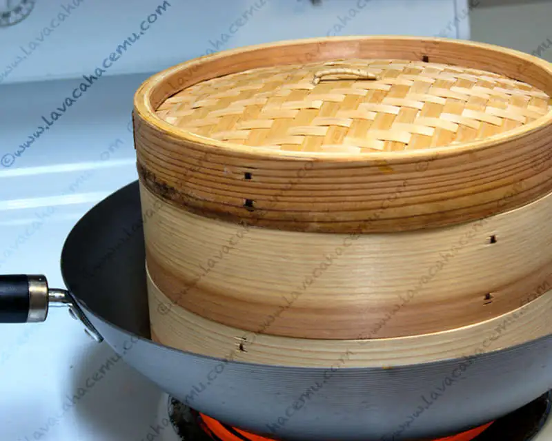

Pan Chino

{kind=link}
{kind=link}
Ahhh... pan chino, años y años pensé que se hacían con harina de arroz, pero ahora, gracias a lo inquisitivo que suele ser uno, ya se que se hacen con harina de trigo normalita y sin ningún vudú chino. Aún recuerdo la primera vez que lo probé en el San-San en Ensenada en una de tantas idas a la comida china en mi infancia, no se como llegó esa pequeña orbe a la mesa, probablemente alguna sugerencia especial del cocinero (eso de tener un padre con razgos y ascendencia oriental tenía sus ventajas), y también supongo que eran de los rellenos de carne de puerco como los de esta receta, en este caso seguimos la receta para la masa como lo indica la receta de los char siu, pero los rellenamos con el salmón del otro día y con algo inventado en el momento porque se nos acabó el salmón. En la foto están las 3 presentaciones, salmón (el rojo), invento (el de las ramitas) y el pan solo, que va embarrado con aceite de ajonjolí y doblado como empanada.
Masa para pan chino (hace 24 panes)
Ingredientes
- 1 pq o 2 1/4 cditas de levadura seca
- 1 tz agua tibia
- 4 1/2 tz harina
- 1/4 tz azucar
- 2 cdas manteca vegetal o aceite
- 1/2 tz agua hirviendo
- 2 cdas aceite de ajonjolí
Procedimiento
- Disuelve la levadura en el agua tibia
- Agrega una taza de harina. Mezcla bien y cubre con un lienzo o trapo para que aparezcan burbujas, una hora aproximadamente
- Disuelve el azúcar y el aceite (o manteca) en la media taza de agua hirviendo, deja que se enfríe hasta que esté tibia
- Añade el agua con azúcar y aceite a la mezcla de levadura
- Agrega el harina restante
- Amasa en una superficie ligeramente enharinada hasta que esté suave. Coloca en un recipiente engrasado y ponlo en un lugar templado.
- Cubre con un trapo húmedo y déjalo a que duplique su volúmen, como 2 horas.
- Divide en 2 porciones, amasa una primero durante 2 minutos. Repite con la segunda parte, haz un rollo con cada porción de apróximadament 30 cm. Corta en 12 piezas (24 en total)
- Aplana cada pieza con la mano y estira con rodillo a un diámetro de 10~12 cm.
- Rellena cada rueda y cierra el pan uniendo todas las orillas
- Pon hojas de napa, lechuga o de algún otro tipo en la parte inferior de la canasta de baño maría para que no se peguen los panes, de esta manera evitas tener que usar papel encerado o de aluminio :D
- Cuece bien tapado a vapor de agua hirviendo durante 10 minutos
Para el relleno de salmón, se usaron las "sobras" (la cuarta parte, aproximadamente) de la receta del otro día, con una cucharada más de azúcar. El relleno verde es bok choy, hongos, cebollines, apio, gengibre, ajo, hoisin, soya, aceite de ajonjolí y azúcar
(creo).